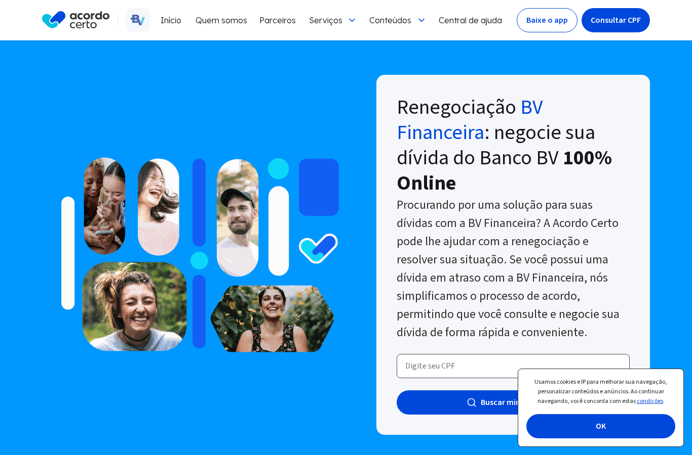
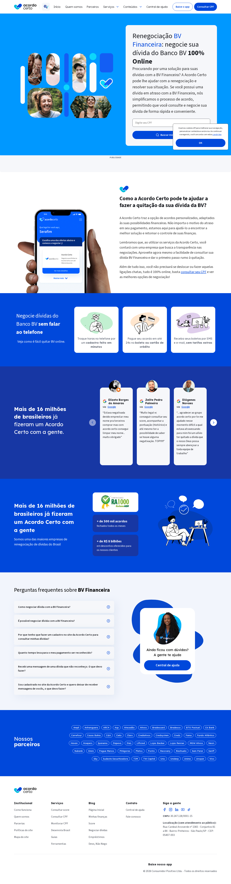

Sistema de Investigação de Marca e Identidade Online
https://www.acordocerto.com.br/parceiros/bv-financeira
Prioridade: MEDIUM · Cenário: B_AMBIGUOUS_COMMUNICATION · Revisão humana: PENDING
O estabelecimento auditado é um correspondente bancário legítimo e autorizado (Acordo Certo / Consumidor Positivo Ltda., CNPJ 30.247.128/0001-15), cuja identidade própria e atuação como intermediadora de renegociação são claras. Contudo, em virtude de ser uma página específica de captação voltada a clientes do Banco BV com aplicação de logotipo e ausência dos avisos formais de correspondente bancário e canais de ouvidoria da instituição financeira contratante previstos na Resolução CMN nº 4.935/2021, o caso enquadra-se no cenário B_AMBIGUOUS_COMMUNICATION (REVIEW_REQUIRED, prioridade MEDIUM) para saneamento regulatório. [Revisor: CONFIRM] A Acordo Certo (CNPJ 30.247.128/0001-15) é um correspondente bancário cadastrado da BV, atuando na intermediação e renegociação de dívidas. A página dedicada utiliza a marca e logotipo do Banco BV sem exibir as informações regulatórias obrigatórias exigidas pela Resolução CMN nº 4.935/2021 (especialmente a explicitação formal da condição de correspondente e o canal de ouvidoria da instituição contratante). A classificação como REVIEW_REQUIRED com prioridade MEDIUM é adequada.


| Ref | Tipo | Local | Conteúdo |
|---|---|---|---|
| E-URL | domain | url | URL final: https://www.acordocerto.com.br/parceiros/bv-financeira (domínio: www.acordocerto.com.br) |
| E-COLLECT | network | collection | Status da coleta: OK; HTTP 200; ocorrências: network did not become idle (continuing) |
| E-DISC-001 | text | search_index | Índice de busca (grounding): acordocerto.com.br — **Nome do Estabelecimento / Perfil:** Acordo Certo Tecnologia Ltda. | **URL:** `https://acordocerto.com.br/parceiros/bv-financeira` | **Uso da Marca e Hipótese:** Página de captura para *"Renegociação BV Financeira: negocie sua dívida do Banco BV 100% Online"*, prometendo quitação de dívidas e geração de boletos de liquidação em até 24x | Apresenta razão social, CNPJ no rodapé e qualifica a sua atuação como plataforma de negociação/correspondente bancário parceiro |
| E-SHOT-VIEWPORT | screenshot | viewport | evidence/C89d052d330/attempt-1/viewport.png (sha256 cc5f699391423ee6…) |
| E-SHOT-FULL | screenshot | page | evidence/C89d052d330/attempt-1/fullpage.png (sha256 433e62f715e46ee1…) |
| E-TITLE | title | head | Renegociação BV Financeira: negocie sua dívida do Banco BV 100% Online | Acordo Certo |
| E-META-1 | meta | head | description: Tem dívidas com BV Financeira? Faça a renegociação com a Acordo Certo e garanta vantagens exclusivas!! Limpe seu nome com atendimento 100% online e seguro |
| E-META-2 | meta | head | og:title: Renegociação BV Financeira: negocie sua dívida do Banco BV 100% Online | Acordo Certo |
| E-META-3 | meta | head | og:description: Tem dívidas com BV Financeira? Faça a renegociação com a Acordo Certo e garanta vantagens exclusivas!! Limpe seu nome com atendimento 100% online e seguro |
| E-CANONICAL | meta | head | https://www.acordocerto.com.br/parceiros/bv-financeira |
| E-HEAD-1 | heading | page | Renegociação BV Financeira: negocie sua dívida do Banco BV 100% Online |
| E-HEAD-2 | heading | page | Procurando por uma solução para suas dívidas com a BV Financeira? A Acordo Certo pode lhe ajudar com a renegociação e resolver sua situação. Se você possui uma dívida em atraso com a BV Financeira, nós simplificamos o processo de acordo, permitindo que você consulte e negocie sua dívida de forma ráp |
| E-HEAD-3 | heading | page | Como a Acordo Certo pode te ajudar a fazer a quitação da sua dívida da BV? |
| E-HEAD-4 | heading | page | Negocie dívidas do Banco BV sem falar ao telefone |
| E-HEAD-5 | heading | page | Mais de 16 milhões de brasileiros já fizeram um Acordo Certo com a gente. |
| E-HEAD-6 | heading | page | Mais de 16 milhões de brasileiros já fizeram um Acordo Certo com a gente |
| E-HEAD-7 | heading | page | Perguntas frequentes sobre BV Financeira |
| E-HEAD-8 | heading | page | Nossos parceiros |
| E-HEAD-9 | heading | page | Institucional |
| E-HEAD-10 | heading | page | Serviços |
| E-HEAD-11 | heading | page | Blog |
| E-HEAD-12 | heading | page | Contato |
| E-HEAD-13 | heading | page | Siga a gente |
| E-HEAD-14 | heading | page | Baixe nosso app |
| E-HDR | text | header | Início Quem somos Parceiros Serviços Conteúdos Central de ajuda Baixe o app Consultar CPF |
| E-FOLD | text | viewport (acima da dobra) | Início Quem somos Parceiros Serviços Conteúdos Central de ajuda Baixe o app Consultar CPF Baixe o app e monitore grátis seu CPF A Acordo Certo em conjunto com a Consumidor Positivo trouxe um aplicativo para você transformar sua relação com suas finanças. Veja todas as suas dívidas negativadas e quem consultou seu CPF de graça. Aumente seu Score de maneira fácil e com dicas. Encontre as melhores ofertas de crédito para o seu bolso. Ou escaneie o código para baixar nosso aplicativo. Renegociação BV Financeira : negocie sua dívida do Banco BV 100% Online Procurando por uma solução para suas dívidas com a BV Financeira? A Acordo Certo pode lhe ajudar com a renegociação e resolver sua situação. Se você possui uma dívida em atraso com a BV Financeira, nós simplificamos o processo de acordo, permitindo que você consulte e negocie sua dívida de forma rápida e conveniente. Buscar minhas dívidas Usamos cookies e IP para melhorar sua navegação, personalizar conteúdos e anúncios. Ao continuar navegando, você concorda com estas condições . OK |
| E-FTR | text | footer | Institucional Como funciona Quem somos Parcerias Políticas do site Mapa do site Serviços Consultar score Consultar CPF Monitorar CPF Desenrola Brasil Guias Ferramentas Blog Página Inicial Minhas finanças Score Negociar dívidas Empréstimos Devo, Não Nego Contato Central de ajuda Fale conosco Siga a gente CNPJ: 30.247.128/0001-15 Localização (sem atendimento ao público): Rua: Cardeal Arcoverde nº 2365 - Conjuntos 81 a 84 - Bairro: Pinheiros - São Paulo/SP - CEP: 05407-003 Baixe nosso app © 2026 Consumidor Positivo Ltda. - Todos os direitos reservados |
| E-NAV | nav | header | logo <https://www.acordocerto.com.br/> | Início <https://www.acordocerto.com.br/> | Quem somos <https://www.acordocerto.com.br/quem-somos> | Parceiros <https://www.acordocerto.com.br/parceiros> | Central de ajuda <https://www.acordocerto.com.br/central-de-ajuda> | Consultar CPF <https://app.acordocerto.com.br/> |
| E-CTA-1 | cta | header | Serviços |
| E-CTA-2 | cta | header | Conteúdos |
| E-CTA-3 | cta | header | Baixe o app |
| E-CTA-4 | cta | header | Consultar CPF <https://app.acordocerto.com.br/> |
| E-CTA-5 | cta | page | Fechar modal |
| E-CTA-6 | cta | page | Buscar minhas dívidas |
| E-CTA-7 | cta | page | Arrow default left |
| E-CTA-8 | cta | page | Arrow default right |
| E-CTA-9 | cta | page | Central de ajuda <https://www.acordocerto.com.br/central-de-ajuda> |
| E-CTA-10 | cta | page | OK |
| E-CONTACT-1 | contact | page | suporte@acordocerto.info <mailto:suporte@acordocerto.info> |
| E-CONTACT-2 | contact | footer | Siga-nos no Facebook <https://www.facebook.com/oficialacordocerto> |
| E-CONTACT-3 | contact | footer | Siga-nos no Instagram <https://www.instagram.com/acordocerto/> |
| E-IMG-1 | image | page (acima da dobra) | imagem alt='' src=https://assets.acordocerto.com.br/f/114280/548x386/0fadc7f076/bv-financeira-banner-bv.png (548x386, acima da dobra) |
| E-IMG-2 | image | page | imagem alt='Logo do Acordo Certo' src=https://www.acordocerto.com.br/images/ac-check.svg?v=2 (53x40, abaixo da dobra) |
| E-IMG-3 | image | page | imagem alt='Mão segurando smartphone' src=https://a.storyblok.com/f/114280/380x329/e6f79d391e/bv-financeira-img-parceiros.png (576x499, abaixo da dobra) |
| E-TXT-001 | text | page | Parceiros |
| E-TXT-002 | text | page | Renegociação BV Financeira: negocie sua dívida do Banco BV 100% Online |
| E-TXT-003 | text | page | Procurando por uma solução para suas dívidas com a BV Financeira? A Acordo Certo pode lhe ajudar com a renegociação e resolver sua situação. Se você possui uma dívida em atraso com a BV Financeira, nós simplificamos o processo de acordo, permitindo que você consulte e negocie sua dívida de forma rápida e conveniente. |
| E-TXT-004 | text | page | Como a Acordo Certo pode te ajudar a fazer a quitação da sua dívida da BV? |
| E-TXT-005 | text | page | Lembramos que, ao utilizar os serviços da Acordo Certo, você contará com uma empresa que busca a transparência nas negociações. Aproveite agora mesmo a facilidade de consultar sua dívida BV Financeira e dar o primeiro passo rumo à quitação. |
| E-TXT-006 | text | page | Negocie dívidas do Banco BV sem falar ao telefone |
| E-TXT-007 | text | page | Veja como é fácil quitar BV online. |
| E-TXT-008 | text | page | Troque horas no telefone por um cadastro feito em minutos |
| E-TXT-009 | text | page | Pague seu acordo em até 24x no boleto ou cartão de crédito |
| E-TXT-010 | text | page | Receba seus boletos por SMS e e-mail, sem tarifas extras |
| E-TXT-011 | text | page | Perguntas frequentes sobre BV Financeira |
| E-TXT-012 | text | page | Como negociar dívida com a BV Financeira? |
| E-TXT-013 | text | page | Veja como é fácil negociar sua dívida BV Financeira: primeiro você precisa entrar no site da Acordo Certo e digitar seu CPF. Complete o cadastro no nosso site com os dados solicitados. Depois de fazer login, veja as informações da sua dívida com a BV Financeira e escolha a quantidade de parcelas, forma de pagamento e data de vencimento. Prontinho: agora é só fechar seu acordo e começar a pagar! |
| E-TXT-014 | text | page | É possível negociar dívida com a BV Financeira? |
| E-TXT-015 | text | page | Sim, é possível negociar sua dívida BV Financeira e o melhor: de forma 100% online, pelo computador ou celular! Para renegociar, basta acessar o site da Acordo Certo, preencher seu CPF e conferir as dívidas registradas no seu nome. Depois, é só escolher a melhor oportunidade para você, fechar seu acordo com a BV Financeira e começar a quitar o débito. |
| E-TXT-016 | text | page | A baixa do pagamento em nosso site pode levar até 5 dias úteis, devido ao processo de verificação pelo banco e também pela empresa parceira. |
| E-TXT-017 | text | page | Se o boleto foi pago dentro da data de vencimento, não há com o que se preocupar. Recomendamos que aguarde o comprovante de pagamento, pois ele serve como evidência de que o pagamento foi feito corretamente. |
| E-TXT-018 | text | page | Se você encontrou alguma dívida que não reconhece no site da Acordo Certo, pode ser que haja algum erro de cadastro nos seus dados e isso é apontado pelo sistema da empresa parceira. Assim, automaticamente, a dívida também aparece no site da Acordo Certo. |
| E-TXT-019 | text | page | Para entender mais detalhes sobre essa dívida, entre em contato com nosso time de atendimento através do link https://app.acordocerto.com.br/fale-conosco. |
| E-TXT-020 | text | page | Se você ficou com alguma dúvida, entre em contato com a gente pelo endereço de e-mail suporte@acordocerto.info. Vamos te responder o quanto antes. |
| E-TXT-021 | text | page | parceiros |
| E-TXT-022 | text | page | CNPJ: 30.247.128/0001-15 |
| E-TXT-023 | text | page | Localização (sem atendimento ao público): |
| E-TXT-024 | text | page | Rua: Cardeal Arcoverde nº 2365 - Conjuntos 81 a 84 - Bairro: Pinheiros - São Paulo/SP - CEP: 05407-003 |
| E-TXT-025 | text | page | © 2026 Consumidor Positivo Ltda. - Todos os direitos reservados |
| Dimensão | Sinal | Achado | Refs |
|---|---|---|---|
| VISUAL_IDENTITY | LEGITIMATE | Identidade visual própria da Acordo Certo é predominante em toda a página, utilizando o logotipo da BV apenas como indicativo do parceiro conveniado. | E-SHOT-VIEWPORT E-SHOT-FULL |
| DECLARED_COMMERCIAL_IDENTITY | LEGITIMATE | A plataforma identifica claramente sua razão social, domínio e CNPJ 30.247.128/0001-15 no rodapé, confirmado como COBAN autorizado da instituição. | E-FTR E-TXT-022 E-TXT-025 |
| CORRESPONDENT_TRANSPARENCY | CONFUSION | Não há menção explícita à qualidade de correspondente bancário nem disponibilização do contato da ouvidoria do Banco BV, conforme estipulado pelo art. 14 da Resolução CMN 4.935/2021. | E-TXT-005 E-FTR |
| INSTITUTIONAL_LANGUAGE | LEGITIMATE | O texto refere-se ao Banco BV e à BV Financeira em terceira pessoa, deixando nítido que a Acordo Certo é uma empresa parceira facilitadora de acordos. | E-TXT-003 E-TXT-005 E-TXT-013 |
| LOGO_USAGE | CONFUSION | Logotipo contemporâneo do BV utilizado no cabeçalho ao lado da marca Acordo Certo e em banner de captura de renegociação sem o aviso regulatório obrigatório. | E-SHOT-VIEWPORT E-IMG-1 |
| SERVICE_JOURNEY | LEGITIMATE | Jornada de renegociação e consulta de dívidas por CPF estruturada dentro do aplicativo/portal da própria Acordo Certo. | E-FOLD E-TXT-013 E-TXT-015 |
| CONTACT_CHANNELS | NEUTRAL | Canais de contato próprios da plataforma (e-mail suporte@acordocerto.info e central de ajuda) disponibilizados sem dados fraudulentos. | E-CONTACT-1 E-TXT-020 |
| CONSUMER_CONFUSION | NEUTRAL | Apesar do destaque para 'Renegociação BV Financeira', o contexto geral e a presença de múltiplos parceiros reduzem o risco de o consumidor crer que está diretamente no portal do banco. | E-HEAD-8 E-TXT-021 E-SHOT-FULL |
O estabelecimento auditado é um correspondente bancário legítimo e autorizado (Acordo Certo / Consumidor Positivo Ltda., CNPJ 30.247.128/0001-15), cuja identidade própria e atuação como intermediadora de renegociação são claras. Contudo, em virtude de ser uma página específica de captação voltada a clientes do Banco BV com aplicação de logotipo e ausência dos avisos formais de correspondente bancário e canais de ouvidoria da instituição financeira contratante previstos na Resolução CMN nº 4.935/2021, o caso enquadra-se no cenário B_AMBIGUOUS_COMMUNICATION (REVIEW_REQUIRED, prioridade MEDIUM) para saneamento regulatório.
CNPJ 30.247.128/0001-15 observado na página consta do cadastro autorizado 'coban_registry_bv.csv (ref. 2026-10-06)'.
| Tipo | Valor | Ref | Contexto |
|---|---|---|---|
| domain | acordocerto.com.br | E-URL | |
| cnpj | 30.247.128/0001-15 | E-FTR | has finanças Score Negociar dívidas Empréstimos Devo, Não Nego Contato Central de ajuda Fale conosco Siga a gente CNPJ: 30.247.128/0001-15 |
| legal_name | Acordo Certo Tecnologia Ltda | E-DISC-001 | |
| legal_name | 2026 Consumidor Positivo Ltda | E-FTR | |
| suporte@acordocerto.info | E-CONTACT-1 | ||
| social_profile | https://www.facebook.com/oficialacordocerto | E-CONTACT-2 | |
| social_profile | https://www.instagram.com/acordocerto/ | E-CONTACT-3 | |
| suporte@acordocerto.info. | E-TXT-020 | ||
| partnership_declaration | parceiros | E-DISC-001 | **URL:** `https://acordocerto.com.br/parceiros/bv-financeira` |
Mapeamento indicativo para apoio à auditoria. Não constitui conclusão regulatória; a decisão definitiva pertence à auditoria.
Fonte: NORMATIVE
Art. 14. O contrato de correspondente deve estabelecer: [...] II - vedação à utilização, pelo contratado, de logomarca ou de outros atributos que sejam similares aos adotados pela instituição contratante em suas agências, postos de atendimento, sítio eletrônico na internet, aplicativo ou outras plataformas de comunicação em rede;
Hipótese: Uso de logomarca, uso excessivo/desproporcional ou de atributos similares aos adotados pela contratante em seus canais
Evidência observada: E-HEAD-1 E-IMG-1 E-SHOT-VIEWPORT
Informação faltante:
Fonte: NORMATIVE
Art. 14. O contrato de correspondente deve estabelecer: [...] III - divulgação ao público, pelo contratado, de sua condição de prestador de serviços à instituição contratante, identificada pelo nome com que é conhecida no mercado, com descrição dos produtos e serviços oferecidos e canais de contato da instituição contratante, inclusive de sua ouvidoria, em local visível, em destaque e em formato legível, por meio de: a) sítio eletrônico do correspondente na internet, acessível na página inicial; b) aplicativo e outras plataformas de comunicação em rede do correspondente; [...]
Hipótese: Divulgação ao público da condição de prestador de serviços/parceria ausente, insuficiente, ambígua ou sem destaque
Evidência observada: E-FTR E-TXT-002 E-TXT-003 E-TXT-005
Informação faltante:
Fonte: NORMATIVE
Art. 3º O correspondente atua por conta e sob as diretrizes da instituição contratante, que assume inteira responsabilidade pelo atendimento prestado aos clientes e usuários por meio do contratado.
Evidência observada: E-FOLD E-TXT-013 E-TXT-015
Limitações: requisitos contratuais/internos não fornecidos: mapeamento limitado ao texto normativo
Decisão: CONFIRM → REVIEW_REQUIRED / MEDIUM
A Acordo Certo (CNPJ 30.247.128/0001-15) é um correspondente bancário cadastrado da BV, atuando na intermediação e renegociação de dívidas. A página dedicada utiliza a marca e logotipo do Banco BV sem exibir as informações regulatórias obrigatórias exigidas pela Resolução CMN nº 4.935/2021 (especialmente a explicitação formal da condição de correspondente e o canal de ouvidoria da instituição contratante). A classificação como REVIEW_REQUIRED com prioridade MEDIUM é adequada.
| Tema | Severidade | Questionamento | Refs |
|---|---|---|---|
| Nenhum questionamento | |||
| Fonte | Consulta / hipótese | URL original | Título / trecho |
|---|---|---|---|
| grounding | Objetivo: Páginas de terceiros ofertando serviços sensíveis com a marca (2ª via boleto, quitação, negociação, quitação de contrato).
Execute no Google Search as seguintes consultas (dorks):
- ("2ª via" OR "segunda via" OR "quitação" OR "quitar financiamento" OR "acordo") ("Banco BV" OR "bv financeira") (boleto OR contrato OR parcelas) -site:bv.com.br -site:bancobv.com.br -site:bvfinanceira.com.br -site:bvinvestimentos.com.br -site:napista.com.br -site:bvopen.com.br -site:meufinanciamentosolar.com.br -site:votorantim.com.br -site:vam.com.br -site:reclameaqui.com.br -site:jusbrasil.com.br -site:jus.br
- ("central de atendimento" OR "fale com" OR "SAC" OR "0800") ("Banco BV" OR "bv financeira") (boleto OR quitação OR negociação OR whatsapp) -site:bv.com.br -site:bancobv.com.br -site:bvfinanceira.com.br -site:bvinvestimentos.com.br -site:napista.com.br -site:bvopen.com.br -site:meufinanciamentosolar.com.br -site:votorantim.com.br -site:vam.com.br -site:reclameaqui.com.br -site:jusbrasil.com.br -site:jus.br
Liste de forma abrangente as páginas públicas encontradas (até 12 resultados distintos), informando para cada uma o nome do estabelecimento/perfil, a URL e como a marca é utilizada (destaque visual, título, feirão, simulador, redes sociais e se há ou não identificação clara de CNPJ e condição de correspondente bancário). H7-threat-intel:sensitive-services | https://www.acordocerto.com.br/parceiros/bv-financeira | acordocerto.com.br **Nome do Estabelecimento / Perfil:** Acordo Certo Tecnologia Ltda. | **URL:** `https://acordocerto.com.br/parceiros/bv-financeira` | **Uso da Marca e Hipótese:** Página de captura para *"Renegociação BV Financeira: negocie sua dívida do Banco BV 100% Online"*, prometendo quitação de dívidas e geração de boletos de liquidação em até 24x | Apresenta razão social, CNPJ no rodapé e qualifica a sua atuação como plataforma de negociação/correspondente bancário parceiro |
Original: https://www.acordocerto.com.br/parceiros/bv-financeira
Final: https://www.acordocerto.com.br/parceiros/bv-financeira
| Artefato | Caminho | SHA-256 | Bytes |
|---|---|---|---|
| screenshot_viewport | evidence/C89d052d330/attempt-1/viewport.png | cc5f699391423ee6bc17deb5f4a59c40459529d6f428b85de035fe44d8fa4967 | 234642 |
| screenshot_full | evidence/C89d052d330/attempt-1/fullpage.png | 433e62f715e46ee106b5ee15b65c44c609a4a2635996cbc0f7bbf93e0b42eeb9 | 952986 |
| html | evidence/C89d052d330/attempt-1/page.html.txt | 986685c596e74e48db68ac70e31ea6ea5d61493a6fd0de93825b2713bbf83986 | 221378 |
| text | evidence/C89d052d330/attempt-1/text.txt | e092497ec9c34a0494a91032608274d0df8cb013ae5507c5cfc0f3cdf1dcafa1 | 8318 |
| page_data | evidence/C89d052d330/attempt-1/page.json | 69b5e924823f60f71da51e7e847d71821f74b9bf8c129343ce3e5eea7d2581de | 33234 |
| Quando | De | Para | Nota |
|---|---|---|---|
| 2026-11-25T18:12:09+00:00 | DISCOVERED | QUEUED | prioritised (score 1.0) |
| 2026-11-25T19:21:30+00:00 | QUEUED | COLLECTING | |
| 2026-11-25T19:21:39+00:00 | COLLECTING | COLLECTED | |
| 2026-11-25T19:21:39+00:00 | COLLECTED | ANALYZING | |
| 2026-11-25T19:22:07+00:00 | ANALYZING | REVIEWING | |
| 2026-11-25T19:22:34+00:00 | REVIEWING | COMPLETED |